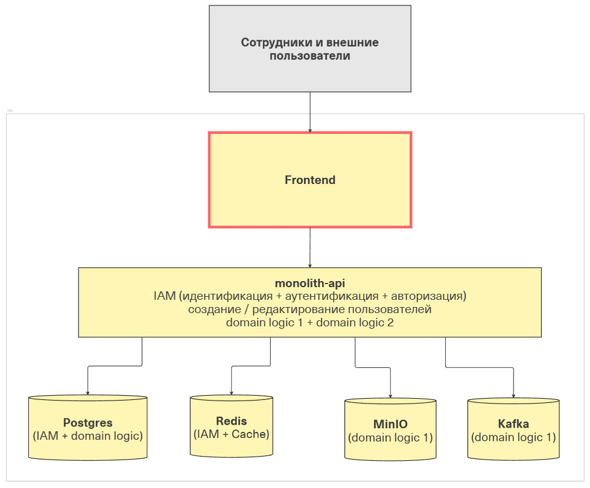
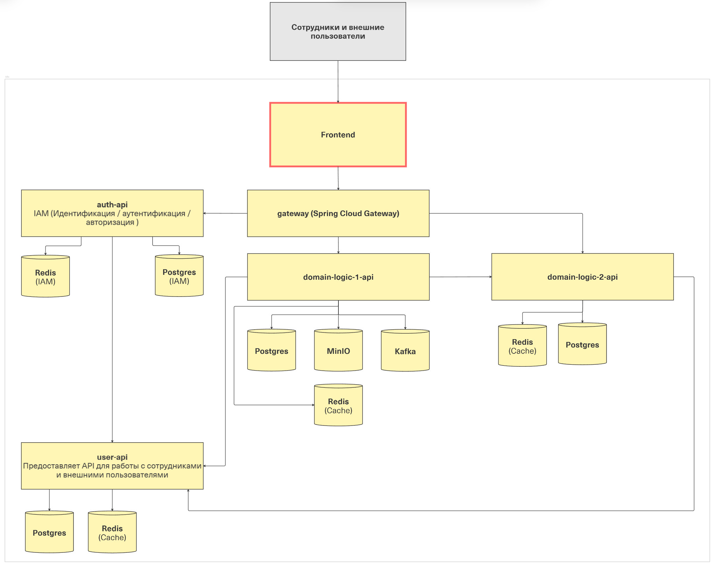

Монолит или микросервисы?
В рамках ассессмента предложил коллеге решить такую задачу: нужно подготовить существующую систему (монолит) к внедрению в будущем новой функциональности:

У нас получилась монструозная система:

- добавили gateway, чтобы маршрутизировать запросы от Frontend
- разнесли ответственности IAM (auth-api) и работу с пользователями (user-api), чтобы снизить вероятность ошибок и разграничить доступ к чувствительным данным сессий
- создали по сервису на каждый домен
- изолировали инфраструктуры (постгри, кафки и т.д.) каждого сервиса выше
Две совершенно разные архитектуры, которые делают одно и то же, но с совершенно разными затратами на развитие и сопровождение.
Стоило рассмотреть возможность создания модульного монолита? Да, конечно! Это позволило бы сохранить простоту сопровождения за счёт разграничения модулей со своими API под разные домены.
Что будет если добавить к первоначальному ещё и такое условие: бизнес пока не знает, будут ли новые фичи пересекаться с уже существующими доменами и пользователями.
В случае такой высокой неопределенности, конечно, очень соблазнительно перейти к микросервисной архитектуре: так мы заранее разведем команды, их релизные циклы и зоны ответственности. Но тут должно быть понятно, как нарезать существующий монолит на сервисы.
Но опять же не стоит сбрасывать со счетов связку из нескольких модульных монолитов. Видно, что сейчас проект достаточно простой и у него есть потенциал еще долгое время оставаться именно в такой конфигурации.
На какой стороне ты?
← Назад к списку статей